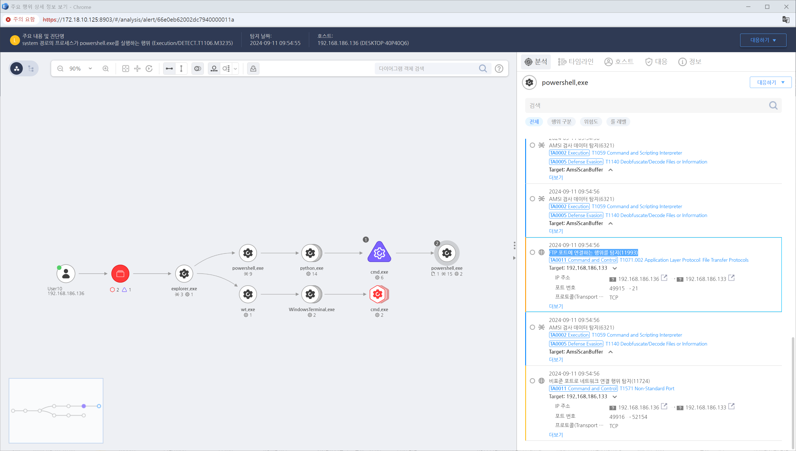

MITRE ATT&CK 액션을 기준으로 대응 방안을 작성
FTP 포트에 연결하는 행위를 탐지합니다. - Action = "ConnectNetwork" AND - RemotePort = "21"

네트워크 트래픽을 분석하여 암호화되지 않은 데이터 전송 또는 평소에 사용되지 않는 프로토콜을 통한 비정상적인 트래픽을 식별합니다.
보안 정보 및 이벤트 관리(SIEM) 시스템을 통해 네트워크 트래픽의 비정상적인 활동에 대한 경고를 분석합니다. SIEM은 특정 규칙을 설정해 평소와 다른 트래픽 패턴을 감지할 수 있습니다.
침입 탐지 시스템(IDS) 또는 침입 방지 시스템(IPS)을 사용하여 비정상적인 트래픽, 특히 암호화되지 않은 데이터 전송을 탐지합니다.
데이터 유출이 의심되는 경우, 네트워크 포렌식을 통해 이전에 발생한 네트워크 활동을 분석합니다. 의심스러운 데이터 유출 경로와 방법을 확인하기 위해 과거 네트워크 트래픽을 복구하고 분석합니다.
의심스러운 트래픽이 확인되면 해당 트래픽을 생성한 시스템을 네트워크에서 격리하여 추가적인 데이터 유출을 방지합니다.
유출된 데이터가 어느 시스템에서 발생했는지, 그리고 해당 시스템에서 어떤 데이터가 외부로 나갔는지 확인합니다.
공격자가 데이터를 유출하기 위해 거친 네트워크 경로와 사용한 도구를 역추적하여 공격 경로를 파악합니다.
데이터를 유출한 것으로 의심되는 시스템의 프로세스와 네트워크 연결 상태를 분석하여 공격자가 시스템 내에서 어떠한 활동을 수행했는지 파악합니다.
데이터 유출이 확인된 시스템은 네트워크에서 즉시 격리하고, 손상된 시스템을 복구하거나 새로 설치된 악성 서비스를 제거합니다.
데이터 유출 방지(DLP) 솔루션을 사용하여 민감한 데이터의 비정상적인 전송을 차단하고, 내부에서 외부로 전송되는 데이터를 실시간으로 모니터링합니다.
비정상적인 데이터 전송에 사용된 사용자 계정을 확인하고, 해당 계정의 비밀번호를 변경하거나 일시적으로 비활성화합니다.
네트워크 모니터링 및 이상 탐지
프로토콜 필터링 및 제한
데이터 손실 방지(DLP) 솔루션 사용
SSL/TLS 검사
로그 모니터링 및 분석
네트워크 분할(Network Segmentation)
Action 실행시 함꼐 영향을 받는 다른 Techniqes
| ATT&CK |
|---|
| T1071.001 |
| D3FEND |
|---|
| D3-NTA Network Traffic Analysis |
| D3-NTF Network Traffic Filtering |
| D3-ITF Inbound Traffic Filtering |
| D3-OTF Outbound Traffic Filtering |
| D3-PHDURA Per Host Download-Upload Ratio Analysis |